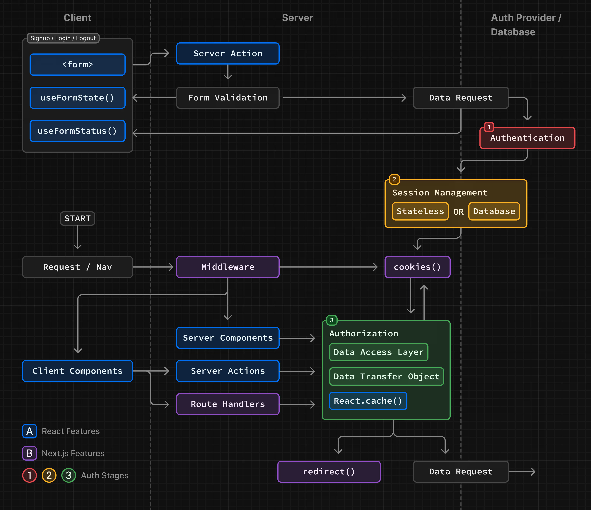

System Architecture Overview
High-Level Architecture Design of Luxorum Dashboard
Architecture Overview
Our system follows a modern web architecture utilizing Next.js 14, AWS Cognito, and a robust authentication flow. The architecture is divided into three main domains:

Core Domains
1. Client Layer (React Features)
The client domain handles user interactions and form management through:
Form Components: Handles user input and validation
Client Components: Manages user interface and interactions
- Rich interactive elements
- State management
- Form validation
2. Server Layer (Next.js Features)
The server domain processes requests and manages business logic via:
- Server Actions: Handles form submissions and data processing
- Server Components: Renders dynamic content
- Middleware: Manages authentication and routing
- Route Handlers: Controls API endpoints
3. Auth Provider/Database Layer
Manages authentication, sessions, and data:
- Authentication services (AWS Cognito)
- Session management (Stateless/Database)
- Data access controls
- Token management
Key Interactions
Authentication Flow
Initial Authentication (Stage 1)
Session Management (Stage 2)
- Token generation and validation
- Session state management
- Cookie handling
Authorization (Stage 3)
- Access control
- Data permissions
- Resource management
Core Features
1. Form Processing
- Client-side validation
- Server-side validation
- Error handling
- State management
2. Data Access Layer
- Authorization checks
- Data transfer objects
- Caching strategy
- Error boundaries
3. Session Management
Hybrid Approach: - Stateless JWT tokens - Database sessions for sensitive operations - Automatic token refresh - Secure cookie management
Technology Stack Details
Frontend
- Next.js 14+ with App Router
- React Server Components
- TypeScript
- TailwindCSS
Backend
- Next.js API Routes
- Server Actions
- AWS Services Integration
- Prisma ORM
Authentication
- AWS Cognito User Pools
- JWT Token Management
- MFA Support
- Email Verification
Infrastructure
- AWS Parameter Store
- CloudWatch Monitoring
- Terraform IaC
- CI/CD Pipeline
Performance Considerations
React Optimization
- Server Component prioritization
- Client Component hydration
- Code splitting
- Bundle optimization
Caching Strategy
- React cache implementation
- Data fetching patterns
- Stale-while-revalidate
- Edge caching
Security Implementation
Token Management
- Secure cookie storage
- CSRF protection
- XSS prevention
- Token rotation
Route Protection
- Middleware authentication
- Role-based access
- Permission validation
- Error handling
Development Workflow
Component Organization
src/
├── app/
│ ├── api/ # All API routes
│ │ ├── auth/ # Auth-related endpoints
│ │ │ ├── login/
│ │ │ │ └── route.ts
│ │ │ ├── signup/
│ │ │ │ └── route.ts
│ │ │ └── verify/
│ │ │ └── route.ts
│ │ └── [...nextauth]/
│ │ └── route.ts
│ ├── (routes)/ # Page routes
│ │ ├── login/
│ │ │ └── page.tsx
│ │ └── signup/
│ │ └── page.tsx
│ └── middleware.ts
├── components/
│ ├── forms/ # Form components
│ │ ├── login/
│ │ │ ├── LoginForm.tsx
│ │ │ └── types.ts
│ │ └── signup/
│ │ ├── SignupForm.tsx
│ │ └── types.ts
│ └── ui/ # Shared UI components
│ └── auth/
│ └── AuthCard.tsx
└── lib/
├── auth/ # Auth utilities
│ ├── cognito.ts
│ ├── session.ts
│ └── validation.ts
└── utils/Request Flow
- Client initiates request
- Middleware processes request
- Server handles business logic
- Auth provider validates
- Response returns to client
Monitoring and Logging
AWS CloudWatch Integration
- Authentication attempts
- Error tracking
- Performance metrics
- Security alerts
Application Monitoring
- Request tracking
- Error logging
- Performance monitoring
- User analytics
Next Steps
For detailed implementation guidance, refer to: